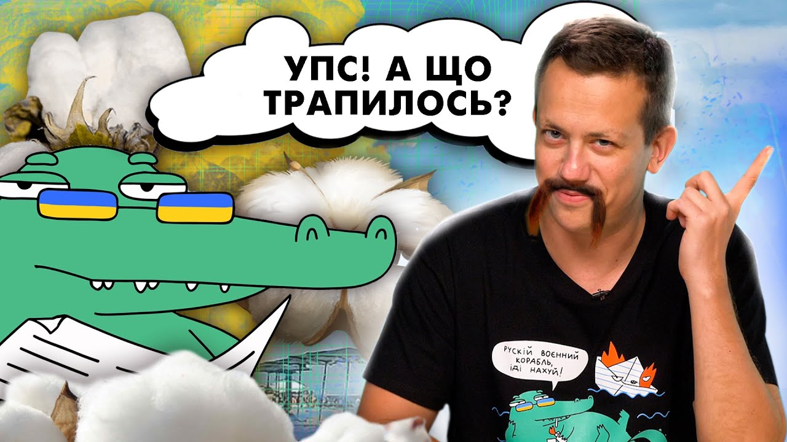
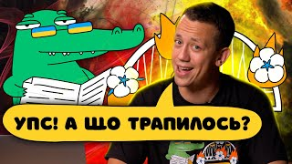
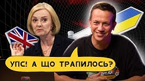
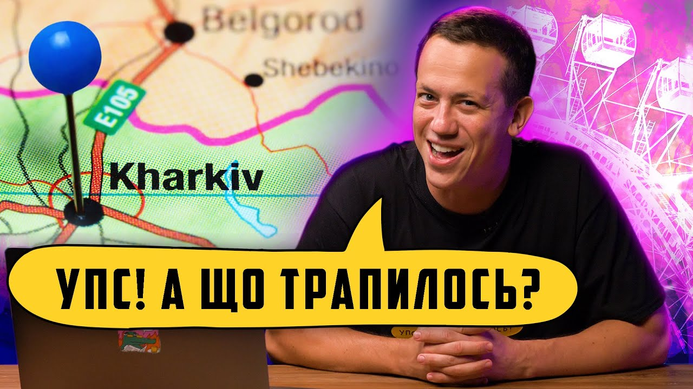

Третій випуск про те, як ЗСУ гонять орків з Херсона, однорукий росіянин орк жаліється на те, як його дівчина розвела на гроші та багато іншого.
Відомий український ютубер Олексій Дурнєв випустив нове шоу у форматі сатиричних новин.
У ютуб-проєкті «Упс! А що трапилось?» ведучий у своїй фірмовій манері робить огляди на останні та найактуальніші новини. Як і у своєму основному шоу «Дурнєв дивиться сторіз», особливу увагу ютубер приділяє новинам про епічні (і не дуже) фейли росіян.
Випуск 1
У першому випуску програми Дурнєв розповів, що засмутило росіянку в Криму, хто навів ЗСУ на штаб окупанта в Попасній, які країни перестають видавати візи росіянам та інші цікаві новини.
Випуск 2 ОКСАМИТОВИЙ СЕЗОН БАВОВНИ
У другому випуску можна побачити про те, як пропагандистка Дугіна полізла "поперед батька в пекло", як Кіркоров перелякався слів "Слава Україні" в Лас-Вегасі та як Ярмак підпалив пердак Соловйову.
Випуск 3 КОЛАБОРАНТИ ЗГОРІЛИ НА РОБОТІ
Випуск 4 ЗСУ ЗВІЛЬНЯЮТЬ НАШУ СВЯТУ ЗЕМЛЮ
У цьому випуску про те, як горять мости в Херсоні, російського попа міліардера, що закликає багатих віддавати все майно бідним, та про те як орки просять про перемир'я на донецькому напрямку.
Випуск 5 ЛЕНД-ЛІЗ ПОЧАВСЯ РАНІШЕ
Цей випуск про те, в окупованому Криму провалився сезон відпочинків, колесо огляду в москві закрилося наступного дня, ЗСУ деокупують неньку, як російські студенти за нездані іспити ідуть на 0 та багато іншого.
Дивись та підтримуй український контент, а також донать на ЗСУ!